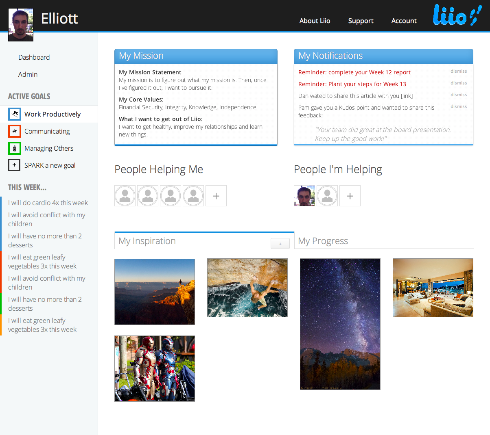

What Is Liio?
Liio is a cloud-based, performance management system designed to sustain high-performance companies and the people who drive them. Liio gives users the tools to support their own development – while providing a proven process and analytics for them and their organization to sustain performance over time.
Using Liio, users will choose from a list of potential personal and professional development goals or create their own, and using the SPARK process Liio will help them measure their progress along the way.
The SPARK process consists of 5 segments:
Start your goal
Each week, you’ll log into Liio and commit to the steps you will complete to move you closer toward your goal. Each goal has a list of focus areas and subsequent steps that you can take to move you closer to your goal, just click on a step to add it to your queue for that week, then do it.
Announce your progress
Liio allows you to share your progress with others so you don’t have to go at it on your own. Send messages, update them on your recent steps and achievements, and get valuable advice from others who are supporting you.
Reflect on your progress
At the end of each week, check back in and reflect on what you did or didn’t accomplish and why. If you didn’t get done what you wanted to or you’ve lost some of your momentum, get back on track by taking action next week.
Kudos points
Earn kudos for each step you complete, set up a series of rewards you will give yourself once you reach certain milestones, and keep track of the focus areas you’re improving on the most.
If you want to learn more about Liio and to try it out for yourself or your Company/Group visit our Join the Liio Project page (link)